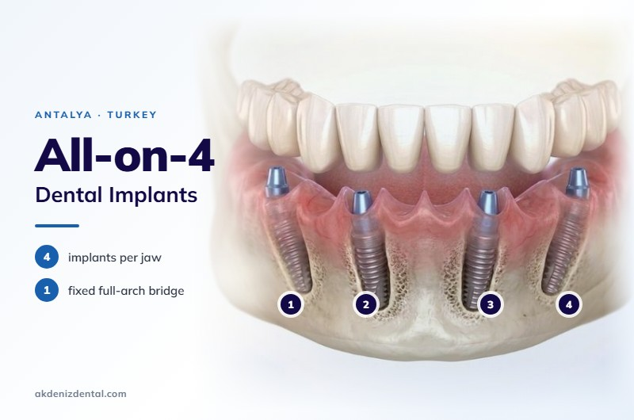
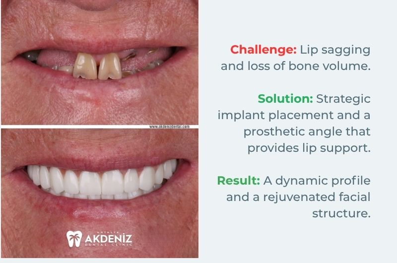
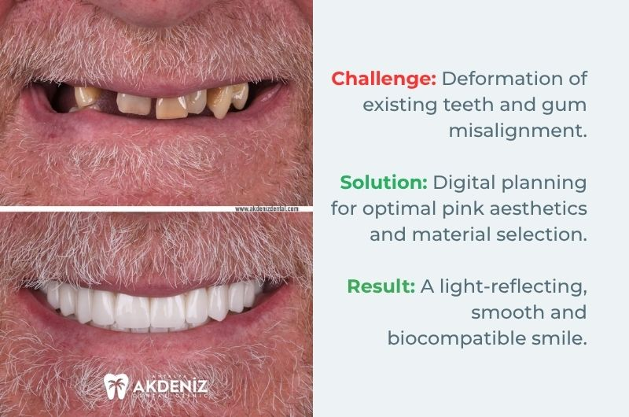
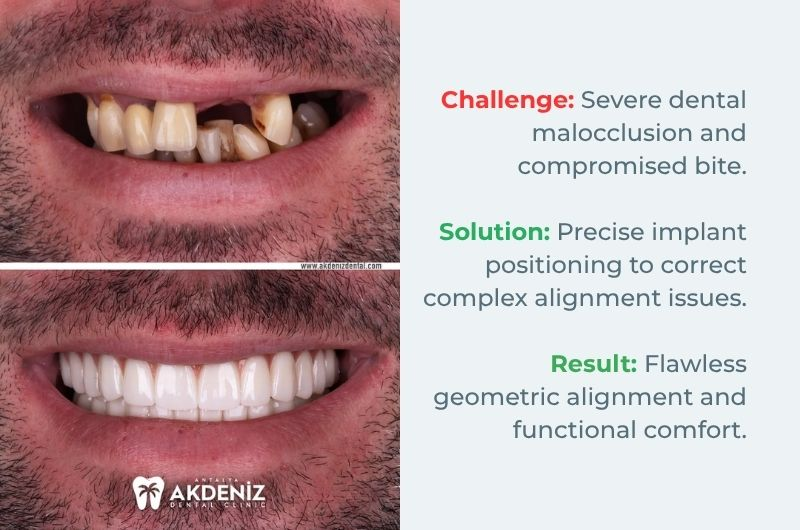
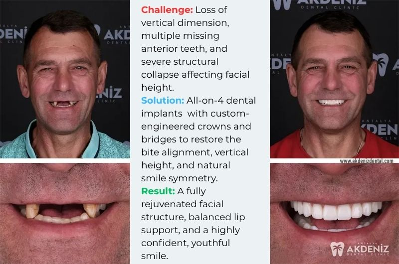

What Are All-on-4 Dental Implants?
Today, tooth loss is a common problem faced by many people. However, with developing dental technology, innovative methods such as All-on-4 dental implants are an effective solution to solve the problem of toothlessness.
All on four is a fast, effective and permanent solution especially for patients experiencing tooth loss in the lower or upper jaw.
All on 4 technique is a procedure applied to patients who have lost all of their teeth or need to be extracted, who do not have enough bone in the rear jawbone, and whose dentures have become loose.
With all on 4 dental implants, four implants are placed at certain intervals, and with this procedure, it is possible to fix the dental prosthesis on the same day.
All-on-4 treatment is especially recommended for patients who want to regain an aesthetic, natural and functional smile.
All-on-4 Procedure in Antalya: Step by Step
Examination and Planning: The first step includes detailed examination and digital imaging by the specialist dentist. The patient's oral structure is examined and appropriate planning is made for All-on-4 implants.
Surgical Stage: The second stage is surgical intervention. Local anesthesia is applied to the area to be treated. Rarely, if the patient has sedation such as fear or panic, general anesthesia is applied.
If the patient has loose teeth before the implants are placed, they are extracted in that session. If there is no tooth to be extracted or if the extracted tooth is not in the area where the implants will be placed, slots are opened in the jaw at appropriate points.
Dental implants are placed in the jawbone. These implants are placed at a special right angle for maximum durability.
Temporary Prosthesis: After implants are placed, the patient is fitted with a temporary dental prosthesis. This prosthesis supports the healing process of the implants and the patient can continue his normal functions comfortably.
Healing: After the implants are placed, the integration process between the jawbone and implants begins. This healing process usually takes several weeks. When healing is completed, permanent dental prosthesis is applied.
Since the measurement results of each patient are different, a special temporary prosthesis is prepared for the lower jaw and upper jaw, taking into account the measurement results. Thanks to these prostheses, our patient does not remain toothless during the treatment.
Pre-prepared temporary prostheses (bridges or crowns) are placed on the implants and fixed.
After 4 dental implants are placed in the jaw with All on 4 implantation technique, approximately 3 months are waited for the bone tissue to fuse with the screwed tooth.
At the end of 3 months, during which fusion is expected, temporary prostheses are removed and permanent prostheses are installed.
All on 4 dental treatment is completed with the installation of permanent dentures.
All on 4 dental implants before and after photos Turkey
Lives transformed by all-on-4: Case studies
Tooth loss affects not only your smile, but also your facial contours and self-confidence. At Antalya Akdeniz Dental Clinic, you can view four different examples of the transformations we have achieved using All-on-4 technique below.
Functional Restoration and Facial Support

Case Analysis 1:
Our primary focus with this patient was to restore the lip structure, which had collapsed inwards due to tooth loss.
Key Detail: Not only the whiteness of the teeth, but also their length and angle were calculated down to the millimetre to support the patient's lip line.
Result: The 'aged face' appearance caused by tooth loss has been replaced by a dynamic and full-bodied profile.
Aesthetic Architecture and Natural Harmony

Case Analysis 2:
In our second case, we aimed to clean the existing deformed teeth and fully stabilise the dental arch.
Key Detail: To break away from the perception of 'artificial teeth', the natural curves of the gums (pink aesthetics) were combined with the translucency of the porcelain.
Result: A smile design was achieved that is both natural and prestigious, perfectly suited to the patient's facial features.
Geometric Alignment and Perfect Occlusion

Case Analysis 3:
In our third case, unlike the others, we encountered severe tooth crowding and malformation rather than significant bone loss. The 'before' photograph above shows an irregular structure where the teeth overlap, the occlusion is compromised, and cleaning has become impossible. By customising All-on-4 technique for this case, our primary objective was to achieve flawless 'geometric alignment' and 'functional occlusion'.
Key Detail: The existing crooked teeth did not allow for the implants to be placed at ideal angles. Through digital planning, the implant positions were adjusted in such a way that the porcelain bridge placed over them completely resolved this complex geometry.
Result: As shown in the photograph below, the form, size and relationship of each tooth to the adjacent one were designed with mathematical precision. This not only restored aesthetics but also re-established the ideal occlusion (bite) necessary for the patient to chew correctly.
All on 4 dental implants Antalya rehabilitation

Case Analysis 4:
This patient presented with generalized tooth wear, multiple missing posterior and anterior teeth, and severe discoloration. This led to a significant loss of vertical dimension, a collapse of the lower face (creating an aged profile), and an asymmetrical smile line that the patient was self-conscious about.
The primary focus was not just on a superficial cosmetic change, but on comprehensive Full Mouth Rehabilitation. This began with stabilizing the bite and restoring proper occlusion. Based on a detailed aesthetic and functional analysis, advanced restorative options were used to not only replace the missing teeth but to rebuild the vertical height. The color and texture of the new restorations were meticulously chosen to be both vibrant and authentic to a natural smile.
Key Detail: The placement and inclination of each individual crown were calculated to precise tolerances. The gum tissue health was also addressed, ensuring a seamless and healthy transition between the restorations and the naturally preserved teeth. The overall design harmonized with the patient's existing features, creating a symmetrical smile frame.
Result: The profound transformation can be seen across the entire face. The 'aged' facial profile is gone, replaced by a dynamic, balanced, and rejuvenated look. By restoring the natural vertical support, the upper and lower lips are properly positioned, smoothing out dynamic lines. The client has rediscovered their smile, projecting a youthful, healthy, and confident energy.
Why are these cases different yet the outcome is the same?
All-on-4 technique is tailored to the individual. As you can see in the four examples above;
In one, our priority was to restore facial volume and lip support,
In another, natural aesthetic alignment and gum harmony were the main focus,
In this final case, we transformed an extremely complex structure into flawless geometric alignment.
The common thread running through these procedures:
Consistent Success: A stable and reliable solution for any complex dental and jaw structure.
Rapid Comfort: Implants and temporary fixed teeth in a single session.
Biological Preservation: Engineering that maintains bone vitality and preserves vertical dimension.
How will your story begin? Book an appointment for a free CT scan and consultation.
How Much Do All-on-4 Dental Implants Cost in Turkey?
Prices for All on 4 dental implants in Antalya start from £1,900.
The cost of All on 4 dental implants varies depending on the treatment to be applied to the patient and the type of prosthesis used.
However, all on four technique is much cheaper than classical methods. Since health tourism is supported by the state, All on 4 dental implants prices in Turkey are cheaper than in European countries.
| Country | All-on-4 price per jaw |
|---|---|
| Turkey (Akdeniz Dental Clinic, Antalya) | From £1,900 |
| United Kingdom | £10,000 - £18,000 |
Looking for All on 4 dental implants in Antalya? Book your free CT scan and consultation.
Get Your Free QuoteHow long does All on 4 treatment last in Turkey?
The longevity of All-on-4 dental implants in Turkey or anywhere else depends on several factors. If the patient does not have a serious health problem and the implants are made of quality materials, their lifespan can be quite long. With proper care, All-on-4 dental implants can generally be used for 15-20 years.
Proper oral hygiene practices play a very important role in maintaining the health of implants. As with natural teeth, it is very important to apply daily care methods. Neglecting oral hygiene can lead to problems such as gum disease or infection that can affect the life of implants.
Regular dental check-ups and oral cleanings are important to ensure the longevity of implants.
It is important for patients to follow the post-treatment instructions provided by their dentist and to share any problems that may arise with their dentist.
With proper care and maintenance, All-on-4 dental implants in Turkey provide patients with a durable and long-lasting solution.
Are all on 4 dental implants safe?
One of the proven and effective methods to enhance your smile is All-On-4 dental implant technique. This treatment is very important in ensuring a radiant and healthy smile. This approach, which has been applied since 1998, has been the choice of hundreds of thousands of individuals with an impressive success rate of 98%. However, it should be emphasized that this success rate is only achieved when performed by a specialist dentist in a state-of-the-art clinic.
To summarize the main advantages of All-On-4 dental implant method, they are as follows:
Simple: The procedure involves only four implants per dental arch; This simplifies the treatment process and minimizes complexity.
Successful: Surprisingly, the entire process can be completed in just one day, providing a convenient and quick solution to get your smile back.
Beneficial: Beyond its cosmetic benefits, All-On-4 supports overall oral health and stability by strengthening your jawbone structure.
Tried: With a track record spanning over two decades, All-On-4 method has stood the test of time, consistently delivering a remarkable success rate. This is a reliable and effective method of restoring long-lasting smiles.
It is important to remember that the success of All-On-4 dental implants procedure largely depends on the expertise of the dentist and the quality of the clinic where it is performed. Choosing an experienced professional and an advanced clinic significantly contributes to achieving the desired result and ensuring the safety of the procedure.
Those considering All-On-4 dental implants in Turkey are advised to thoroughly research and select a reputable dental clinic with a proven track record of performing All-On-4 procedures successfully. For this reason, we are waiting for you at Akdeniz Dental Clinic with our experienced staff.
What Are the Advantages of All-on-4 Implants in Turkey?
All on four dental implants are extremely safe and are a popular choice for people looking for a dental implant solution. We have mentioned some of the benefits of all-on-four technique below.
- Does Not Damage Gums: Unlike dentures, All-on-4 implants do not put excessive pressure on the gums and contribute to increasing the comfort of the patient.
- Permanent and Natural Appearance: All-on-4 Dental Implants offer a permanent and durable solution that closely resembles natural teeth in both appearance and feel.
- Bone Health Benefits: The presence of implants in the jaw stimulates the bone, preventing further bone loss.
- Cost-Effective Treatment: Reducing the number of implants reduces treatment costs. It is a more economical alternative to traditional implant procedures.
- Fast and Effective: The procedure provides permanent teeth in just two sessions and the patient will have a brand new smile in a short time.
- Increases Self-Confidence and Quality of Life: The rapid transformation in smile aesthetics allows individuals to achieve a renewed appearance by increasing their self-confidence and general quality of life.
- Restoring the Ability to Eat Food: All-on-4 implants restore the ability to enjoy a variety of foods, allowing patients to comfortably eat their favorite meals.
- Easy Care: Dental care of All-on-4 dental implants is simple, like the care routine of natural teeth. No additional or complicated maintenance procedures are required. Routine dental care is sufficient.
Individuals who choose Akdeniz Dental benefit from a cost-effective solution to their dental needs by choosing All-on-4 technique.
What's the difference between all on 4 and all on 6 dental implants?
The choice of All-on-4 and All-on-6 dental implants varies depending on the patient's jaw structure and specific needs. Both treatments offer solutions for complete edentulism, but some factors influence the decision-making process.
All-on-4 dental implants are made by placing four implants in the jawbone, while All-on-6 dental implants use six implants. Since both techniques require adequate bone support, treatment is determined depending on the jawbone volume the patient has.
All-on-4 implants generally cost less than All-on-6 implants.
All on four treatment heals in a shorter time. The fewer number of implants in All-on-4 shortens the healing time.
All-on-4 dental implant is suitable for patients with low jaw bone volume.
All-on-6 implants require a more solid jawbone volume.
The decision between All-on-4 and All-on-6 should be made in accordance with the dentist's recommendations, taking into account the individual circumstances and advantages mentioned earlier. It is important for patients to consult specialist dentists for a detailed examination. The number of implants used affects not only the cost but also the duration of treatment and possible complications.
As a result, the choice between All-on-4 and All-on-6 dental implants should be made after a detailed examination by specialist dentists who will evaluate the unique situation of each patient and determine the most appropriate technique.
Who is the ideal candidate for All-on-4 Dental Implants?
Ideal candidates for All-on-4 dental implants procedure in Turkey are as follows:
If the patient has a significant loss of teeth with All on 4 dental implant, he or she may be a candidate for treatment.
The candidate's jawbone structure must support titanium implants.
Patients who use prosthesis or will need prosthesis in the future may prefer it.
It is a highly aesthetic and functional solution for patients who have lost teeth due to impact, injury, or tooth decay.
Age is not a limiting factor for All-on-4 dental implants as long as the candidate is in good health.
In line with these needs of the candidate, his suitability for All-on-4 dental implant is decided by a specialist physician after a detailed examination.
Types of All-on-4 Dental Implants in Turkey
All-on-4 treatment includes various ingredients depending on the types of ingredients used. This treatment consists of three main elements: implants, abutment and crown. Each component is made from different materials, which have their own advantages and disadvantages.
Implants:Implants are an important component that forms the attachment point of the prosthetic tooth or crown. They can be made from two different materials: titanium and zirconium. Although titanium is a material that has been used successfully for many years, zirconium also offers an aesthetic closer to the natural tooth color and reduces the risk of infection.
Abutment:The abutment is where the prosthetic teeth sit, and since it is made of the same materials as implant, there is no compatibility problem during the installation process. At this point, the use of materials such as titanium or zirconium affects the success of the treatment.
Crown: Antalya crown is the visually visible part of All-on-4 treatment and is placed on top of the abutment. Materials such as porcelain and zirconium are generally used in dental coatings. Porcelain offers an aesthetic closer to the natural tooth color, but zirconium is preferred because it causes fewer problems.
The selection of materials used in All-on-4 dental implants varies depending on factors such as the patient's individual needs, aesthetic preferences and general health condition. Therefore, a detailed evaluation with the patient is important to ensure the most appropriate material selection.
How to clean all 4 dental implants?
All-on-4 dental implants require regular and thorough cleaning to maintain oral health.
Use a soft-bristled toothbrush to clean your implants and surrounding teeth.
Stiff bristles can damage implants or irritate gums.
Use dental floss to clean hard-to-reach areas.
Rinse your mouth with an antibacterial, non-alcoholic mouthwash. Go for regular dental checkups.
Regular and meticulous oral hygiene is crucial to the success and longevity of your All-on-4 dental implants.
Are All on Four dental implants removable?
All-on-4 dental implant procedure in Antalya is performed by fixing four implants to the jawbone using the screwing technique. These implants serve as a solid foundation for the installation of permanent dentures. After the fixation process is completed, people cannot remove these prostheses themselves, unlike traditional prostheses that can be put on and taken off at will. Unlike traditional, portable devices, All-on-4 implants cannot be removed because they are fixed by screws. However, they can be removed by the dentist in the clinical setting if necessary.
All-on-4 Dental Implants: A Revolutionary Approach to Full Mouth Restoration
All-on-4 dental implant treatment is a game-changing approach in full arch restoration. This innovative solution involves placing only four dental implants to secure a fixed full-arch prosthesis on the day of surgery.
"Why are All-on-4 dental implants gaining so much popularity?" you might wonder.
The primary reason is that they provide a less invasive and cost-effective alternative to traditional dental implant methods. Fewer implants mean less surgical intervention and a quicker recovery time for patients.
But "Can All-on-4 dental implants replace all teeth?
Yes, All-on-4 dental implants can replace all missing teeth in either the upper or lower jaw. The treatment is particularly beneficial for patients who have lost most or all of their teeth and wish to regain a complete, functional smile.
Spread the Cost of Your Treatment with Monthly Payments
Planning your treatment in Antalya? Learn how you can finance your dental treatment through Ideal4Finance with tailored monthly repayment options.